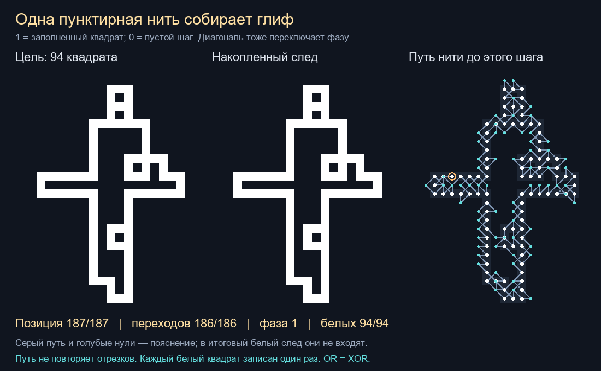
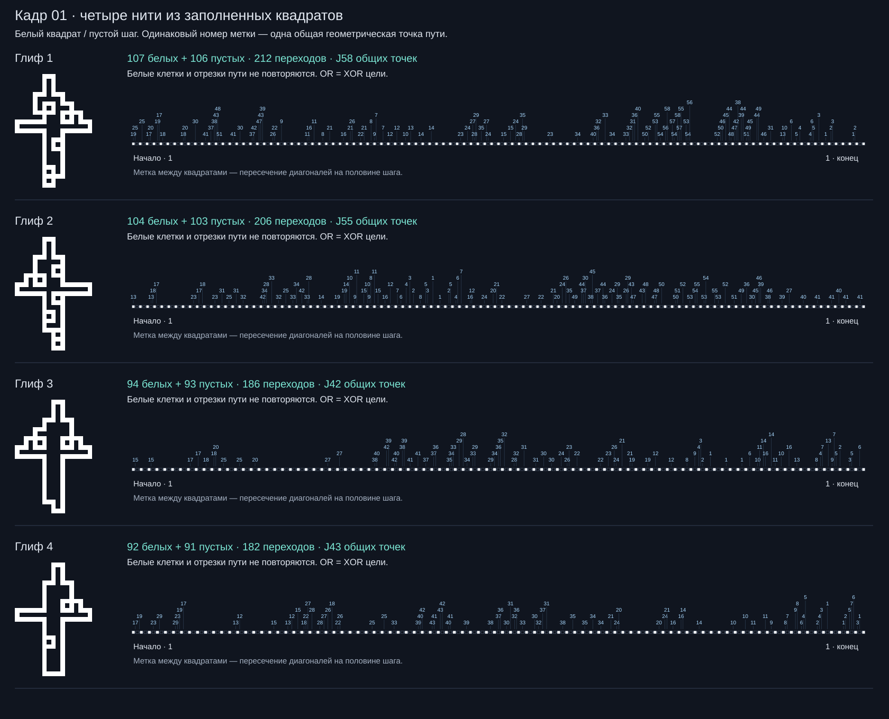

← Исследование глифов · Все исследования
13 ноября 2026 · 0.001 · исследовательский разбор
Глиф одной пунктирной нитью из квадратов
Для присланного глифа найден маршрут: 94 белых квадрата, 93 пустых посещения, 186 переходов. Ни одна белая клетка и ни один геометрический отрезок пути не повторяются. В наборе 19 × 4 найдены и независимо проверены 56 маршрутов; 18 случаев пока неизвестны, ещё 2 имеют доказанный барьер для выбранного растра.
Все наши глифы клеточные. Здесь уточняется размер клетки: исходную восстановленную осевую решётку мы делим по шагу пополам. Активные узлы получают удвоенные координаты, между концами каждого ребра добавляется его середина. Поэтому результат относится к этой более мелкой сетке. Он не доказывает существование того же маршрута на исходном шаге и не устанавливает генератор концертной анимации.
Посмотреть проход · 19 листов по четыре строки · Почему видна красная и синяя кайма: пиксели и субпиксели
Как нить рисует глиф
Слева цель, посередине накопленный белый рисунок, справа путь центров клеток. Белый маркер справа означает 1, голубой — пустое посещение 0. Серые соединения справа показывают движение; они не входят в нарисованный глиф. Ролик без звука: 20,7 с, 10 кадров/с, один шаг на кадр и остановка на результате.

Что с чем взаимодействует
- Нить хранит положение на квадратной решётке и фазу 1 или 0. Стартовая позиция — 1.
- Каждый переход в соседнюю клетку, в том числе по диагонали, меняет фазу: 1 → 0 → 1. У 1 рисуется заполненный квадрат, у 0 не происходит записи.
- Пустой шаг может попасть на уже белую или будущую белую клетку и ничего не стирает. В этом маршруте таких нулевых посещений 9.
- Каждая из 94 целевых клеток получает ровно одну единицу; снаружи цели единиц нет. Поэтому накопление по OR и по XOR даёт одинаковый глиф. AND для этого результата не нужен.
Всего 187 позиций: 94 единицы и 93 нуля. Между ними 186 переходов — минимум для 94 отдельных белых записей при обязательном чередовании 1–0 и старте/финише на 1: нужно хотя бы 93 промежуточных нуля, значит не менее 2 × 94 − 2 переходов.
Повороты: H — горизонталь, V — вертикаль, D — диагональ. Прямой переход H↔V запрещён; требуется D. Ограничения «любое изменение направленного угла не больше 45°» в поиске нет. У найденного пути соседние направления образуют 0°, 45°, 90° и 135°. Если добавить предел 45°, это будет новая задача, и приведённый маршрут её не подтверждает.
Пересечения: у пути присланного глифа 49 разных общих геометрических точек. Это повторные посещения центров и пересечения диагоналей между центрами; совпадение точки не равно повторной белой записи. Повторное прохождение одного и того же неориентированного отрезка запрещено и не встречается.
19 кадров — в каждом четыре развёрнутые строки
В каждой строке слева клеточный глиф, справа последовательность белых квадратов и пустых шагов. Одинаковый номер над разными местами строки означает одну и ту же точку встречи пути. Метка на половине шага — пересечение диагоналей. J — число таких разных точек. Нумерация начинается заново для каждого глифа.
56 найденных маршрутов проверены отдельным валидатором. В 18 остальных поиск закончился по времени: отсутствие решения не доказано. Для 11/1 и 11/2 граф допустимых переходов между белыми посещениями несвязен: компоненты 89 + 3 и 95 + 3. Связать их без лишней белой клетки нельзя.
Оба случая 11/1 и 11/2 получены из плохо различимой съёмки — шаг исходной решётки меньше 5,5 пикселя изображения. Барьер точен для сохранённого растра, но не для любой трактовки фотографии. Он также не относится к модели, где временно разрешены лишние белые квадраты с последующим гашением по XOR.
| Лист SVG | Глиф 1 | Глиф 2 | Глиф 3 | Глиф 4 |
|---|---|---|---|---|
| Кадр 01 · 4 строки | 212 переходов · J58 | 206 переходов · J55 | 186 переходов · J42 | 182 переходов · J43 |
| Кадр 02 · 4 строки | пока не найден | 212 переходов · J71 | 212 переходов · J57 | 196 переходов · J55 |
| Кадр 03 · 4 строки | пока не найден | пока не найден | пока не найден | 188 переходов · J48 |
| Кадр 04 · 4 строки | 186 переходов · J49 | 218 переходов · J64 | пока не найден | пока не найден |
| Кадр 05 · 4 строки | 166 переходов · J39 | 222 переходов · J58 | 190 переходов · J44 | 204 переходов · J47 |
| Кадр 06 · 4 строки | 174 переходов · J45 | пока не найден | 186 переходов · J38 | пока не найден |
| Кадр 07 · 4 строки | 182 переходов · J57 | 186 переходов · J36 | пока не найден | 196 переходов · J58 |
| Кадр 08 · 4 строки | пока не найден | 206 переходов · J55 | 186 переходов · J42 | 182 переходов · J38 |
| Кадр 09 · 4 строки | 222 переходов · J61 | 172 переходов · J34 | 194 переходов · J52 | 186 переходов · J52 |
| Кадр 10 · 4 строки | пока не найден | пока не найден | 218 переходов · J61 | 196 переходов · J55 |
| Кадр 11 · 4 строки | разрыв достижимости | разрыв достижимости | пока не найден | 186 переходов · J52 |
| Кадр 12 · 4 строки | 174 переходов · J45 | 232 переходов · J63 | 196 переходов · J53 | 188 переходов · J48 |
| Кадр 13 · 4 строки | 186 переходов · J49 | 216 переходов · J69 | пока не найден | 214 переходов · J65 |
| Кадр 14 · 4 строки | 172 переходов · J47 | 228 переходов · J66 | 190 переходов · J44 | 196 переходов · J61 |
| Кадр 15 · 4 строки | 222 переходов · J61 | 172 переходов · J42 | пока не найден | 186 переходов · J52 |
| Кадр 16 · 4 строки | 232 переходов · J63 | 226 переходов · J60 | 224 переходов · J60 | пока не найден |
| Кадр 17 · 4 строки | 198 переходов · J47 | пока не найден | пока не найден | 198 переходов · J56 |
| Кадр 18 · 4 строки | 212 переходов · J58 | 206 переходов · J55 | 186 переходов · J42 | 182 переходов · J43 |
| Кадр 19 · 4 строки | 212 переходов · J58 | 206 переходов · J55 | 186 переходов · J39 | 182 переходов · J43 |


Пример: лист первого кадра

Исходники и воспроизведение
Пакет 76 целей и результатов поиска · Независимая проверка · Проверка присланного глифа · Как устроен поиск · Весь разбор ZIP.
49 путей найдены поиском, ещё 7 перенесены между точно совпадающими растрами поворотом, отражением или сдвигом и проверены заново. История первого запуска сохранена в отдельном черновом отчёте; его числа не заменяют итоговые 56 / 18 / 2.
python square-thread-check.py python square-thread-atlas.py python pixel-border-inspect.py python square-thread-render.py python square-thread-page.py python build-page.py
Для проверки и SVG достаточно стандартного Python. PNG требуют Pillow; видео — также FFmpeg. Поиск ограничен временем, поэтому повторный поиск может найти другое число путей. Проверка уже сохранённых маршрутов от времени поиска не зависит. MP4 сжат с потерями: для точных цветов и клеток используйте JSON, SVG и PNG, а не декодированный видеокадр.
Продолжение опыта с фазой пунктирной петли. Предыдущая модель тонкой непрерывной обводки остаётся отдельной задачей: рёбра линии и заполненные клетки имеют разные условия обхода.